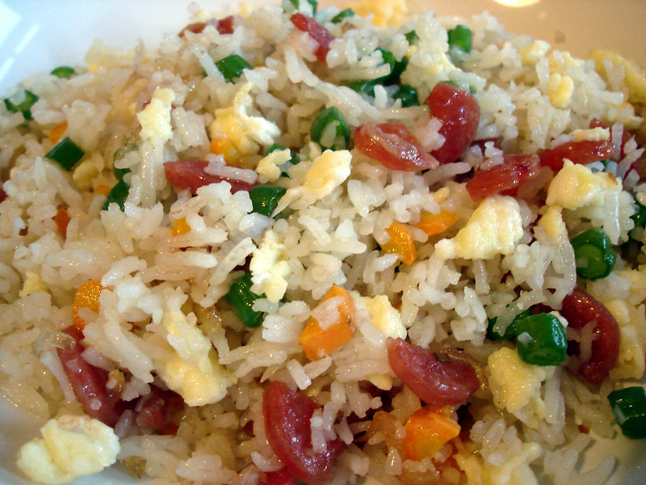

Fried Rice
Home

"Fried Rice" by
su-lin
is licensed under
CC BY-NC-ND 2.0


 .
.
What is it?
Fried rice is truly a staple of many asians country. Easy country makes it their own way,
so if the one you make at your home looks different from mine, you may want to find a different
recipe (or try this one)!
The way I would describe this dish is simple, throw in rice, your veggies of choice, eggs,
soy sauce, and whatever else you want really, and you get fried rice!
Ingredients
- ⅔ cup chopped baby carrots
- ½ cup frozen green peas
- 2 tablespoons vegetable oil
- 1 clove garlic, minced, or to taste (Optional)
- 2 large eggs
- 3 cups leftover cooked and chilled white rice
- 1 tablespoon soy sauce, or more to taste
- 2 teaspoons sesame oil, or to taste
Steps
- Assemble ingredients.
- Place carrots in a small saucepan and cover with water. Bring to a low boil and cook for 3 to 5 minutes. Stir in peas, then immediately drain in a colander.
- Heat a wok over high heat. Pour in vegetable oil, then stir in carrots, peas, and garlic; cook for about 30 seconds. Add eggs; stir quickly to scramble eggs with vegetables.
- Stir in cooked rice. Add soy sauce and toss rice to coat. Drizzle with sesame oil and toss again.
- Serve hot and enjoy!
Recipe Credits:
All Recipes